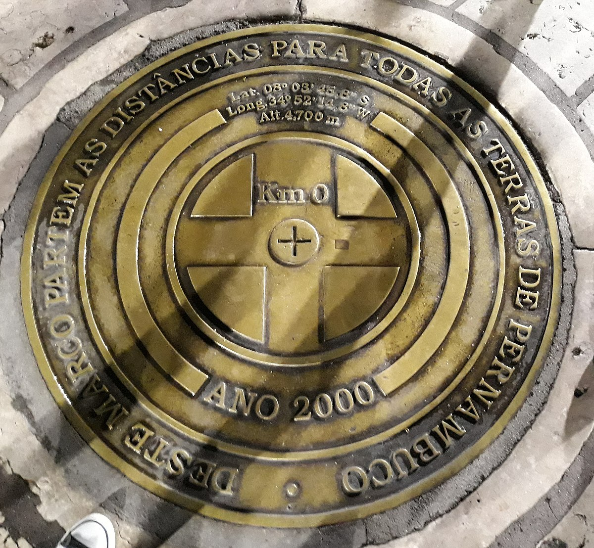

Marco Zero de Recife
Localização
O Marco Zero de Recife é um dos pontos turísticos mais icônicos da cidade. Situado no bairro histórico do Recife Antigo, próximo ao porto, o local é um marco simbólico e cultural, servindo como ponto de partida para a medição das distâncias rodoviárias do estado de Pernambuco. Além disso, é rodeado por diversos atrativos culturais e históricos, tornando-se um ponto de encontro popular tanto para turistas quanto para moradores locais.
Importância
No disco central do Marco Zero de Recife, pode-se ler a seguinte mensagem: "Deste marco partem as distâncias para todas as terras de Pernambuco". O Marco Zero é um local de grande importância histórica para a cidade, marcando o início da contagem das distâncias rodoviárias do estado. Ele serve como ponto de referência para a medição das distâncias entre as cidades de Pernambuco e do Brasil, destacando-se como um símbolo significativo tanto para a cidade quanto para o país.
Curiosidades

Além de sua importância histórica, o Marco Zero de Recife é um destino muito procurado por turistas e residentes locais. É um ponto de encontro vibrante para diversas manifestações culturais e artísticas, incluindo shows, apresentações de dança e exposições de arte. Essas atividades tornam o local não apenas um marco histórico, mas também um centro pulsante de vida cultural na cidade, onde pessoas de diferentes origens se reúnem para apreciar e participar de eventos variados.